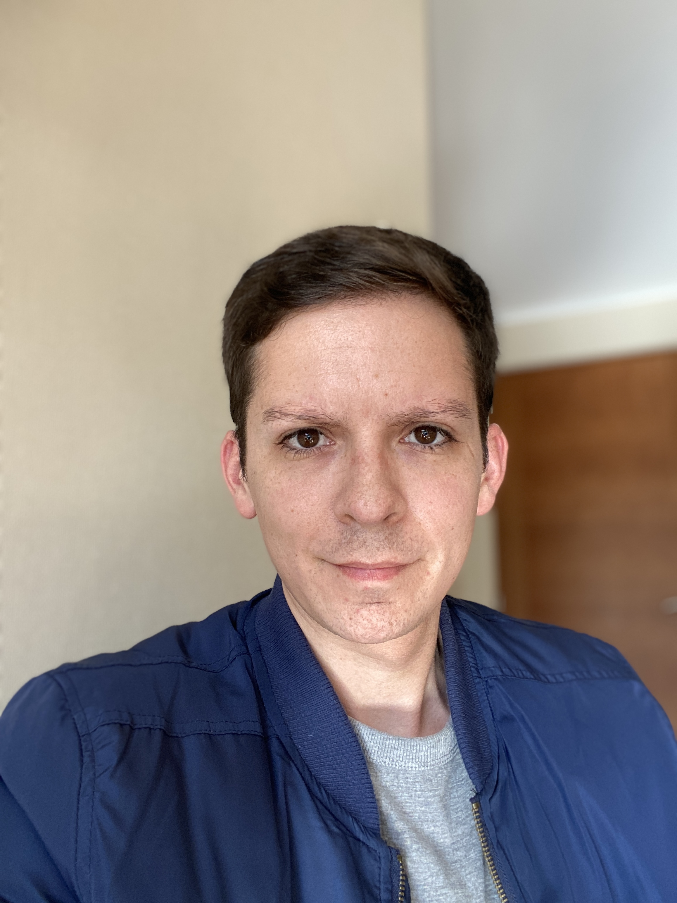

Ingeniero Civil Independiente
Profesional Independiente | 2025 - Presente
- Diseño y cálculo de estructuras, segpun normas NCh, ACI y AISC.
- Diseño y cálculo de sistemas sanitarios de alcantarillado y agua potable, según normas NCh y RIDAA.

Ingeniero de la Universidad Austral de Chile con 5 años de experiencia general, relacionado al área de cálculo estructural de edificaciones y puentes, mecánica de suelos y diseño de obras sanitarias de alcantarillado y agua potable.
Descargar CV (PDF)Profesional Independiente | 2025 - Presente
Secretaría de Planificación (SECPLAN) I. Municipalidad de Villarrica | 2022 - 2024
COHESIONA SPA, Valdivia | 2020 - 2022
Laboratorio CIVILAB, Universidad Austral de Chile | 2020 - 2022
Laboratorio de Puentes y Estructuras, Universidad Austral de Chile | 2019 - 2020